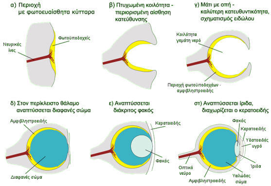
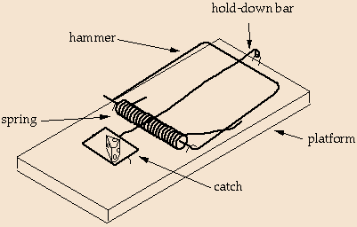
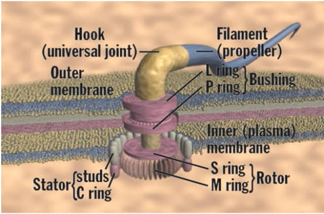

According to the theory of evolution, the organs and systems of living organisms were formed through small, gradual changes that happened at random, acting on simpler earlier systems. With the help of natural selection, only the beneficial changes were kept each time, and so the organ or system kept developing and improving, up to the present forms of flawless function and wonderful precision that we see in living beings.
A typical example given is the evolution of the eye:

Source: http://el.wikipedia.org/wiki/Εξέλιξη_του_ματιού
But the scenario above is merely an unproven hypothesis, and newer scientific findings in fact show it to be groundless.
For the eye is a complex organ whose complexity is irreducible. This means that if even one of the parts that make up the eye is missing, it cannot work. So such an organ (whose complexity cannot be reduced – that is, no part of it can be missing) cannot have come from small, gradual changes, because in a hypothetical earlier form it would not have worked, and so it would have been rejected by natural selection1.
Darwin himself, in his work “The Origin of Species”, admits that:
“To suppose that the eye, with all its inimitable contrivances for adjusting the focus to different distances, for admitting different amounts of light, and for the correction of spherical and chromatic aberration, could have been formed by natural selection, seems, I freely confess, absurd in the highest possible degree”The question of irreducible complexity as an argument against the theory of evolution was raised by Michael Behe, professor of biochemistry at Lehigh University in Pennsylvania, in 1996 in his book “Darwin's Black Box” (the black box is the cell, because Darwin did not know what happens inside the cell).

As an example of a mechanism of irreducible complexity from everyday life, he gives a typical mousetrap , which is made up of a wooden base, a metal part that catches the mouse, a spring and so on. If even one of these parts is missing, the result will not be that the mousetrap works less efficiently (catches fewer mice); the result will be that it does not work at all! This is because the mousetrap was built by an intelligent person with a specific structure, and did not come from small, gradual changes that happened by chance.In the same way, in living organisms there are organs and systems that work through the coordinated action of many specialised factors (that is, they have irreducible complexity), and so cannot have come about as the result of evolution.
Besides the eye, typical examples are the bacterial flagellum and the blood-clotting mechanism:
- The bacterial flagellum is a tail that some bacteria have so that they can move when they are in a liquid environment. The mechanism that moves this tail is a real “biological motor”, with a stator, rotor, drive shaft, rings, universal joints, shock-absorbing bushings and so on, ending in the propeller tail. Each of these 40 parts in all is a protein molecule with a structure precisely specialised for the role it is meant for. All of this is assembled within a space of a few billionths of a metre! Such a system cannot have come from the evolution of a simpler earlier motor, because if the motor were not exactly as we see it today, it would not work at all; it would be something superfluous that natural selection would reject2.

- Blood clotting is a mechanism that is switched on to stop bleeding when we are wounded. This mechanism works through the coordinated action of a great number of factors that determine precisely when the blood should clot (only in the case of a wound), in which area, for how long, over what extent and so on. If even one of these factors were missing or did not work exactly as it should, the bleeding could not be stopped and the organism could not survive. So there cannot have been an earlier, simpler blood-clotting mechanism that evolved into the one we know today.
Footnotes:
1 On the question of the eye, someone could point to intermediate anatomical and functional forms in the animal kingdom, from the eye of the hawk to simple light sensitivity, to support the view that simpler working systems exist too. But today we know that even simple light sensitivity is not simple at all; for even the most elementary light sensitivity of an organ to exist, biochemical processes of irreducible complexity are required, and for these there could have been no earlier stage that worked well enough to be chosen by the “sieve” of natural selection. 2 In recent years there has been a boom in nanotechnology, the branch of technology that deals with building working units on the nanoscale, that is, on a scale of billionths of a metre. It began with building processing units for computers on the nanoscale, but today nanotechnology aims to build biological machines on the nanoscale that will be able to intervene in cell functions for diagnosis and treatment. Yet mechanisms similar to those at the cutting edge of modern technology already exist inside cells, and are in fact more complex– and according to the theory of evolution this requires no intelligence but is the result of blind, random processes!Appendix: “The question of the 2nd law of thermodynamics”
According to the 2nd law of thermodynamics, the spontaneous tendency of matter is to move from organisation and order towards disorder and disorganisation. But the theory of evolution holds that at some point a living cell was formed from non-living matter. In other words, non-living matter, instead of falling into greater disorder and disorganisation, began spontaneously to produce, through random chemical processes, a high level of organisation and order (because even the simplest cell is an extremely complex system). But this is a process that violates the 2nd law of thermodynamics and therefore cannot have taken place (for more details see the related material in the right-hand column).
***
The contents of this article are a summary of the “Christianityand Science” broadcast of 20/11/2008. The related material is listed in the right-hand column.
Listen to the broadcast
Part 1 Part 2 Part 3 Part 4 Back to the category: evolution or creation? Related material*
- Darwin's Black Box [A book by biochemistry professor Michael Behe, Free Press, 2006]
- Intelligent Design -PowerPoint- [From the website osta.com
by Dr Heinz Lycklama – PowerPoint file] - What is irreducible complexity?
[From the website gotquestions.org] - Irreducible Complexity
[From the English Wikipedia] - The Evidence of

Biological Machines [An excerpt from the film of the book “The Case for a Creator” by Lee Strobel.
Produced by Illustra Media] - The Case for a Creator [A book by Lee Strobel,
Zondervan, 2004] - Irreducible complex-
ity – biological machines [An excerpt from the documentary “Unlocking the Mystery of Life”, produced by Illustra Media] - Biological Machines vs
Human-made Machines
[From the website ideacenter.org] - The Cell as a Collection of Protein Machines [By Bruce Alberts, president
of the National Academy of Sciences, USA – original article] - Pierre Grassé – blood clotting is a mechanism of irreducible complexity
[An excerpt from the blog CreationEvolutionDesign] - The theory of evolution and
its problems in
current research
[An article from the website diakrisis.gr
see pp. 4–5] - Counter-arguments to irreducible complexity
and their rebuttal
[An article by the
“Christianity & Science” team] - A final theory in
biology and life
[Stelios Kerasidis, PhD
of the Medical School of the University of Crete – a talk at the scientific symposium “Brain and Consciousness”, Xylokastro, 2003
original article – PDF source] - Life and the 2nd law
of thermodynamics
[An article by the
“Christianity & Science” team] - Scientific evidence
against evolution
[From the website logiazois.gr] - Scientific evidence
against evolution -PowerPoint- [From the website osta.com
by Dr Heinz Lycklama – PowerPoint file] - From the ape?
[A book by Ap. Ch. Fragkos
Adelfotis “Stavros” Publications
Athens 1988] - Atheism – the new fundamentalism
[An article from the
newspaper “Kathimerini”] - A bright future
for nanotechnology
[An article from the
newspaper “Kathimerini”]
- - -
* Please note thatour website does not represent,
and is not connected with, the content of other websites we link to.